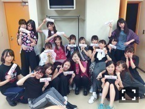
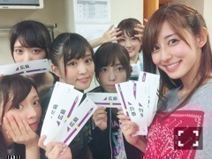
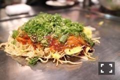

| 2016/09 22 Thu | 斎藤ちはる ぶち大好きじゃけぇ(´>∀<｀)ゝ |
ちはるーむへようこそ(﹡ˆ ˆ﹡)
今日からアンダーライブ
中国シリーズ！！
初日の今日は広島でした\( ˆoˆ )/
とにかくめちゃくちゃ楽しい。
とっても楽しい！
来てくれた皆さんとの距離が近いので
一体感が生まれる！
それによって反応もすぐ私たちにも伝わるので
ライブをしている感じを
モロに感じることができます。
ライブの生な感じ！！
やっぱりライブ好きだな〜と
改めて感じる事ができます。
そして今日、
赤と青のサイリウム、
斎藤ちはるタオル、
手作りうちわやグッズうちわ、
凄く良く見えました( ;o; )( ;o; )
しかも前のアンダーライブよりも
全然多かった( ;o; )
とってもとっても嬉しかった。。
いつも支えてくださってありがとう。
今日から3日間は
アンダーライブのオフショットが
メインになると思います(﹡ˆ ˆ﹡)
来れない皆さんには
私たちの雰囲気をおすそ分け♡
来れる皆さんには
モチベーションアップになれば♡
まずは恒例の！
アンダーライブ、全国各地の
ご当地シール！！

全員揃った...！！
嬉しかった...！！

アップで撮るとこんな感じ〜♡
次の駅が岡山に設定されています！
細かい！良い！！
今日の
#chihashot

早速、マイカメラで♡
今日ライブ終わりに
メンバーと食べに行った
お好み焼き〜！！
広島風お好み焼き〜！！
美味しかった〜！！
お腹がパンパンになるまで
みんなで仲良くワイワイ食べました♡
アンダーメンバー仲が良いので
話が弾む弾む...！
こういうご飯会も
アンダーライブの醍醐味。
美味しいものをたっぷり食べて
今日のご褒美と、明日も頑張る活力！
ご褒美大事♡
-------------------------♡
♬ ChihaMusic
「Only Seventeen」夜の本気ダンスさん
聞いてるだけで元気でるし
なんか頑張ろうってなる！
テンポも良いし、
踊りたくなる。
"どこまでだっていけるさ"
まだまだ前へ進んでいきます！
明日も楽しんできます\( ˆoˆ )/
岡山〜！！
倉敷〜！！
おやすみ♡
斎藤ちはる